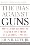

It Wasn't Just Our Imaginations

The Bias Against Guns
Why Almost Everything You've Heard About Gun Control Is Wrong
Review
by
Sunni Maravillosa
|
Turns out it hasn't been our imaginations that the U.S. media has a bias against guns and gun usage: they do, and John Lott proves it in his newest book The Bias Against Guns. Lott looks at firearms ownership and use from the perspective of an economist, which means that his questions are testable ones. The Bias Against Guns answers two broad questions: 1) Does the media have a bias against guns?; and 2) What are the facts with respect to gun safety/storage tools and laws? His research is detailed, and his reporting clearly stated and amply documented; Lott's style is the calm, measured presentation of an economist rather than a "gun nut". But that doesn't mean his conclusions won't rankle those who value RKBA. [....] to post comments and submit feedback, is a subscriber-only feature.
The Bias Against Guns: Why Almost Everything You've Heard About Gun Control Is Wrong
|